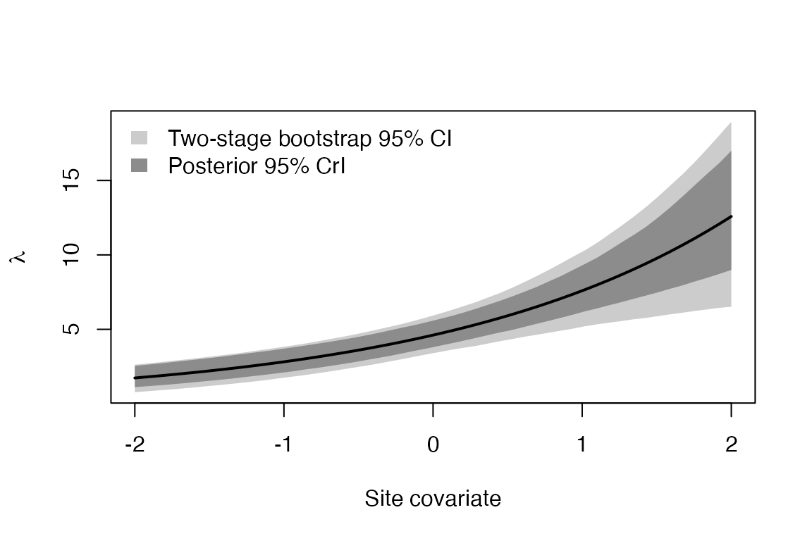

Two-Stage Bootstrap for N-Mixture Models
Ph.D. Ohkubo Yusaku
2026-11-11
Source:vignettes/nmix-twostage.Rmd
nmix-twostage.RmdOverview
In a binomial N-mixture model, counts are collected at sites on repeated visits :
The data are hierarchical, so a bootstrap should resample both
levels. The two-stage bootstrap first resamples sites
with replacement,
,
and then resamples the observed visits within each selected copy of a
site. Instead of refitting the model for every resample,
poscosea approximates each replicate of a posterior mean
from a single MCMC run:
where and are posterior covariances between and the site-level marginal log-likelihood and the visit-level log-likelihood, respectively.
The workflow is
-
nmix_draws()– pick , and out of the MCMC output, -
nmix_loglik()– compute the site- and visit-level log-likelihoods, -
ijk_nmix()– compute the influence values for a quantity of interest, -
ijk_bootstrap_2stage()– generate the bootstrap replicates.
Example data
We simulate data with unmodelled overdispersion in abundance, so that the fitted Poisson N-mixture model is misspecified.
set.seed(1)
I <- 60; J <- 3
x <- rnorm(I) # site covariate
xp <- matrix(rnorm(I * J), I, J) # visit covariate
lambda_true <- exp(1.5 + 0.5 * x + rnorm(I, 0, 0.5))
N_true <- rpois(I, lambda_true)
y <- matrix(rbinom(I * J, rep(N_true, J), plogis(0.5 * xp)), I, J)
y[c(3, 10, 25), 3] <- NA # some missing visitsPosterior draws
In practice the parameter draws come from MCMC (see the last
section). To keep this vignette self-contained, we use a Laplace normal
approximation to the posterior of
,
with independent weakly informative Normal priors specified below. These
are illustrative posterior draws, not MCMC output. The fitted Poisson
model omits the site-level abundance variation used to generate the
data, so the resulting intervals should not be read as calibrated
coverage results. We draw
from its conditional posterior. nmix_loglik() accepts a
single draw when evaluating the marginal likelihood during
optimization.
prior_mean <- c(1.5, 0, 0, 0)
prior_sd <- c(2, 1.5, 2, 2)
nll <- function(par) {
lam <- matrix(exp(par[1] + par[2] * x), 1)
p <- matrix(plogis(par[3] + par[4] * xp), 1)
log_lik <- sum(suppressWarnings(nmix_loglik(y, lam, p)$site))
log_prior <- sum(dnorm(par, mean = prior_mean, sd = prior_sd, log = TRUE))
val <- -log_lik - log_prior
if (is.finite(val)) val else 1e10
}
opt <- optim(c(1, 0, 0, 0), nll, method = "BFGS", hessian = TRUE)
if (opt$convergence != 0) stop("Posterior mode optimization did not converge.")
post_cov <- solve(opt$hessian)
S <- 2000
th <- t(opt$par + t(chol(post_cov)) %*% matrix(rnorm(4 * S), 4))
colnames(th) <- c("alpha.lam", "beta.lam", "alpha.p", "beta.p")
lambda <- exp(th[, 1] + outer(th[, 2], x)) # S x I
p <- plogis(th[, 3] + outer(th[, 4], as.vector(xp))) # S x IJ
## N_i | y_i, theta on the grid max(y_i), ..., max(y_i) + 100
draw_N <- function(y, lambda, p, Nmax_extra = 100) {
S <- nrow(lambda); I <- nrow(y)
N <- matrix(NA_integer_, S, I)
for (i in seq_len(I)) {
obs <- which(!is.na(y[i, ]))
Ns <- max(y[i, obs]) + 0:Nmax_extra
Nr <- matrix(Ns, S, length(Ns), byrow = TRUE)
lt <- dpois(Nr, lambda[, i], log = TRUE)
for (j in obs) lt <- lt + dbinom(y[i, j], Nr, p[, i + (j - 1) * I], log = TRUE)
cw <- t(apply(exp(lt - apply(lt, 1, max)), 1, cumsum))
N[, i] <- Ns[rowSums(cw < runif(S) * cw[, ncol(cw)]) + 1]
}
N
}
N <- draw_N(y, lambda, p)Log-likelihoods and influence values
nmix_loglik() returns the site-level marginal
log-likelihood and two versions of the visit-level log-likelihood:
obs_rb (for quantities that depend only on the parameters)
and obs_joint (for quantities involving the latent
abundance
;
requires N).
ll <- nmix_loglik(y, lambda, p, N = N)
str(ll[c("site", "obs_rb", "obs_joint")])
#> List of 3
#> $ site : num [1:2000, 1:60] -5.45 -4.89 -5.4 -4.81 -5.95 ...
#> $ obs_rb : num [1:2000, 1:180] -1.128 -0.935 -1.03 -0.848 -1.52 ...
#> $ obs_joint: num [1:2000, 1:180] -1.209 -0.757 -1.012 -0.673 -1.495 ...We draw the bootstrap weights once and share them across quantities.
w <- nmix_weights(B = 5000, obs_mask = ll$obs_mask)A regression coefficient
fit_beta <- ijk_nmix(th[, "beta.lam"], ll)
boot_two <- ijk_bootstrap_2stage(fit_beta, type = "twostage", weights = w)
boot_site <- ijk_bootstrap_2stage(fit_beta, type = "site", weights = w)
boot_two
#>
#> IJK Bootstrap Summary (N-mixture, type = "twostage")
#>
#> Bootstrap replicates: 5000
#>
#> estimate bias se lower upper
#> 1 0.498 -5.33e-05 0.11 0.286 0.722
rbind(
posterior = c(estimate = mean(th[, "beta.lam"]), se = sd(th[, "beta.lam"]),
setNames(quantile(th[, "beta.lam"], c(0.025, 0.975)), c("lower", "upper"))),
site = unlist(summary(boot_site)[c("estimate", "se", "lower", "upper")]),
twostage = unlist(summary(boot_two)[c("estimate", "se", "lower", "upper")])
)
#> estimate se lower upper
#> posterior 0.4978255 0.08037342 0.3430796 0.6581175
#> site 0.4978255 0.10925440 0.2893603 0.7233496
#> twostage 0.4978255 0.11003653 0.2857569 0.7216042The total abundance of the surveyed sites
depends on the latent abundance, so we use obs = "joint".
The likelihood weights only capture the variation through the
parameters; nmix_latent_resid() adds the prediction error
of
.
Ntot <- rowSums(N)
fit_N <- ijk_nmix(Ntot, ll, obs = "joint")
summary(ijk_bootstrap_2stage(fit_N, weights = w,
latent_resid = nmix_latent_resid(N, ll)))
#> estimate bias se lower upper
#> 1 318.402 -0.4242808 35.25975 250.8748 389.72
quantile(Ntot, c(0.025, 0.975)) # posterior interval
#> 2.5% 97.5%
#> 281 371
sum(N_true) # realised value
#> [1] 374Several quantities at once: a regression curve
A matrix theta (draws in rows, quantities in columns)
gives replicates for all quantities with the same resamples.
xg <- seq(-2, 2, length.out = 50)
lam_curve <- exp(th[, "alpha.lam"] + outer(th[, "beta.lam"], xg)) # S x 50
fit_curve <- ijk_nmix(lam_curve, ll)
sc <- summary(ijk_bootstrap_2stage(fit_curve, weights = w))
pq <- apply(lam_curve, 2, quantile, c(0.025, 0.975))
plot(xg, sc$estimate, type = "n", ylim = range(sc$lower, sc$upper, pq),
xlab = "Site covariate", ylab = expression(lambda))
polygon(c(xg, rev(xg)), c(sc$lower, rev(sc$upper)), col = "grey80", border = NA)
polygon(c(xg, rev(xg)), c(pq[1, ], rev(pq[2, ])), col = "grey55", border = NA)
lines(xg, sc$estimate, lwd = 2)
legend("topleft", c("Two-stage bootstrap 95% CI", "Posterior 95% CrI"),
fill = c("grey80", "grey55"), border = NA, bty = "n")
Using MCMC output
With JAGS (here through runjags), monitor
,
and
and pass the draws to nmix_draws(). Columns are matched by
name (lam[i], p[i,j], N[i]), so
their order in the output does not matter.
library(runjags)
fit <- run.jags("Nmix.txt", monitor = c("beta", "lam", "p", "N"),
data = jags_data, n.chains = 3)
dr <- nmix_draws(as.mcmc.list(fit), I = nrow(y), J = ncol(y),
lambda = "lam", p = "p", N = "N")
ll <- nmix_loglik(y, dr$lambda, dr$p, N = dr$N)If the detection model contains random effects, the monitored
are conditional on them and nmix_loglik() returns the
likelihood conditional on those random effects.